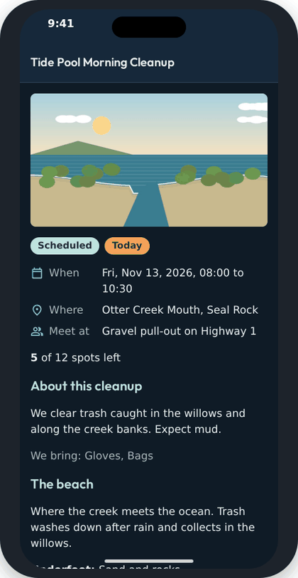
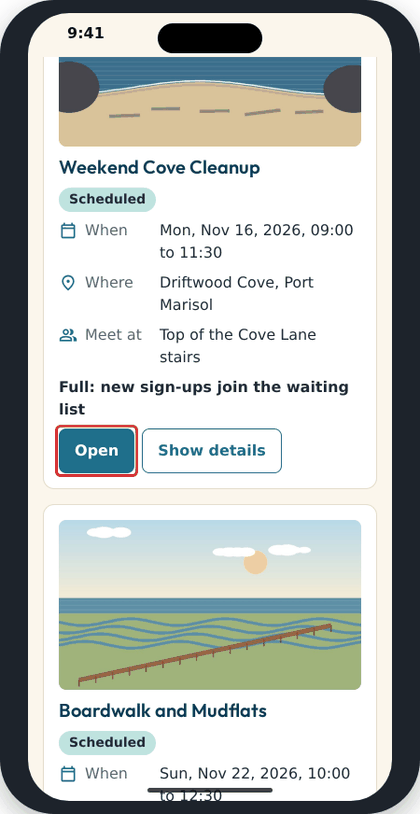
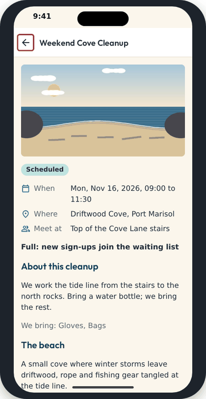
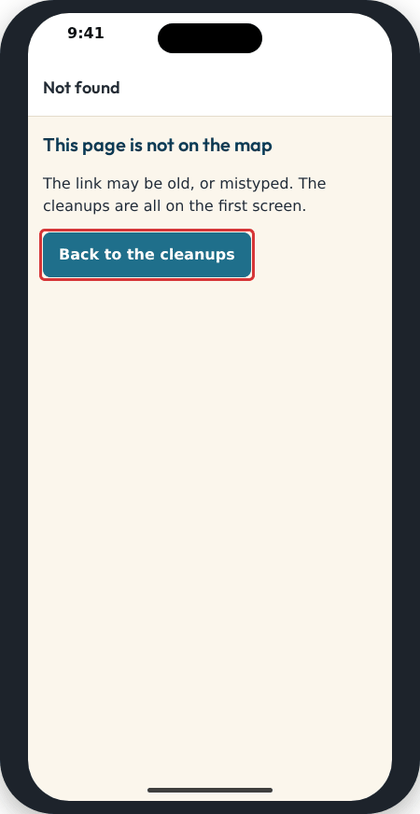

🧭 Lesson 4.1: File-Based Routing
An app with one screen is a poster. Real apps are places you move around in: you tap a cleanup, read everything about it, and come back to the list exactly where you left it. In this lesson Shoreline Crew gets its second screen. With Expo Router, a file in src/app is a screen, its path is its address, and TypeScript checks every link you write, so a typo is a red line in your editor instead of a dead end on a volunteer's phone.
🎯 Learning Objectives
By the end of this lesson, you will be able to:
- Explain how Expo Router turns the files in
src/appinto screens and addresses, including layouts,index, dynamic[id]segments and+not-found - Configure a stack and its header bar in three places: for every screen, for one route in the layout, and from inside a screen once its data has loaded
- Move between screens with
Link(includingasChildon your own button) and with the imperativerouter, and choose push or replace - Read a route's params with
useLocalSearchParams, typed from the route, and explain why they are always strings - Use typed routes to catch broken links with
tsc, and know when Metro must run to refresh them
📦 Code for this lesson
Starting code: lesson-11-start.zip · Finished code: lesson-11-end.zip. Each folder has a README with the commands to run it.
In This Lesson
👋 Welcome: From One Screen to an App
Since Lesson 1.2, Shoreline Crew has had one screen, src/app/index.tsx, and a root layout, src/app/_layout.tsx, that you have mostly used for fonts, the splash screen, the status bar and the theme. Both files were Expo Router files all along. Today you use the router for what it is for:
- A screen for each cleanup. One file,
src/app/cleanups/[id].tsx, draws any cleanup:/cleanups/e08is Weekend Cove,/cleanups/e17is Tide Pool Morning. The card's quick look ("Show details") stays; a new Open button takes the volunteer to the full screen. - Header bars with real titles. The cleanup screen's header shows the cleanup's name once it has loaded, in the app's heading font, with a back button to the list.
- A dead end that is not a dead end. A mistyped or outdated link lands on Shoreline Crew's own "not on the map" screen, with a way home.
- Links TypeScript checks. Misspell a route and
npx tsc --noEmitsays "Did you mean '"/cleanups/[id]"'?" before anyone taps it.
Why it matters for your work: navigation is the skeleton of every app. Expo Router is the router Expo's templates start with, it is built on React Navigation (which many existing React Native apps use directly), and its file-based model is the same idea as Next.js and other web frameworks you may meet. On a team, "where does this screen live and what is its address" should have one obvious answer: with file-based routing, it is the file's path.
Why it matters for the volunteers: a cleanup's meeting point, parking and what to bring are exactly what someone checks in the car park. They need to get there in one tap and get back to the list without losing their place.
If you did the React + TypeScript course, you have used a router on the web (Lesson 6.1 of that course, with React Router 8). Routes, params and links mean the same thing here. What changes on a phone: there is no address bar to type in, screens stack on top of each other instead of replacing the page, and "back" is a button in the header, a swipe on an iPhone and a system gesture or button on Android.
🗂️ Files Are Screens
Expo Router reads the folder src/app (the template's choice: app.json's expo-router plugin finds it there) and turns each file into a route: a screen with an address. You never write a list of routes; the folder is the list. Here is Shoreline Crew at the end of this lesson:
File in src/app | Address | What it is |
|---|---|---|
_layout.tsx | (none) | The layout: not a screen, but what wraps the screens in its folder. The root layout holds the providers (theme, fonts, status bar) and the navigator, a Stack |
index.tsx | / | The Cleanups screen. index means "this folder's own address", like index.html on the web |
cleanups/[id].tsx | /cleanups/e08, /cleanups/e17, … | A dynamic route: the square brackets match any one segment and name it id |
+not-found.tsx | anything that matches no other file | The not-found screen. A + marks a file Expo Router treats specially |
| (nothing: Expo Router adds it) | /_sitemap | A list of every route, for you while developing (Exercise 2) |
A few rules come with the folder. Only route files belong in src/app: components, hooks and the API client stay in src/components, src/hooks and src/api, where they have been all along (Lesson 3.2's lab screen lived in src/app because it was a screen, with the address /list-lab). Each route file has a default export, the screen component. And folder names in parentheses, such as (tabs), group routes without adding to the address: Lesson 4.2 uses one for the tab bar.
💡 Mental model: the signposts at the trailhead
A big beach has a map at the car park: numbered access paths, each with a signpost. The folder src/app is that map. Every file is a signposted path, and its name is what is written on the post. cleanups/[id] is not one path but a rule: "Access number", one post per cleanup, all leading to the same kind of place. And +not-found is the sign that says "this path does not exist, the main beach is that way". You change the map by adding a file; nobody keeps a separate list that can go out of date.
📚 The Stack and Its Header
The root layout renders a Stack: a navigator that keeps screens in a pile. Opening a screen pushes it on top, with the platform's slide-in animation; going back pops it off, and the screen underneath is still there, scrolled where you left it, its state untouched. That is why the Cleanups list keeps its place, its loaded pages and its search text when you come back from a cleanup.
On a phone, Stack is a native stack (react-native-screens): each screen is a real platform screen, and the header bar is drawn by iOS or Android, not by JavaScript. That is where the platforms differ, according to the React Navigation and Expo Router docs:
| iPhone | Android phone | Web preview | |
|---|---|---|---|
| Header title | Centered | Left-aligned | Left-aligned, after the arrow |
| Back button | A chevron with the previous screen's title ("Cleanups") | An arrow | An arrow; it is a link named "Cleanups, back" |
| Other ways back | Swipe from the left edge of the screen | The system back gesture or button | The browser's back button |
Three places to set a screen's options
The header's title, its font, whether it shows at all: these are screen options. You can set them at three levels, and the more specific one wins:
- Every screen of the stack:
<Stack screenOptions={{ … }}>in the layout. Shoreline Crew sets the header title's font to Outfit here, once. - One route, from the layout:
<Stack.Screen name="cleanups/[id]" options={{ … }} />inside theStack. Thenameis the file's path insrc/appwithout the extension. Good for things known in advance: the Cleanups screen hides its header (it draws its own banner, since Lesson 2.3); the cleanup screen starts with the title "Cleanup". - From inside the screen: render
<Stack.Screen options={{ … }} />in the screen's JSX. It draws nothing; it updates that screen's options, so the title can come from data that just loaded:title: event.title.
The header's colors come from the navigation theme you gave ThemeProvider in Lesson 2.5 (the card color for the bar, text for the title, primary for the back button), so the header follows dark mode with no extra code. That is why the restructured _layout.tsx keeps every line it already had: the fonts and the splash screen hold, the status bar, and the ThemeProvider around the stack.
🧩 Version note: Stack.Title and older articles
Expo Router 58 also has newer header components you render inside a screen, such as <Stack.Title> and <Stack.Toolbar> (Stack.Screen.Title is already marked deprecated in favor of Stack.Title). They work, but the course measured one surprise with Stack.Title (Common Mistakes). Older tutorials set titles with navigation.setOptions(…) from useNavigation(), or import from @react-navigation/native directly; in an Expo Router app, use Stack.Screen and import from expo-router.
🔗 Moving Around: Link and the Router
There are two ways to go to another screen. Link is a component: it says "this thing, when pressed, goes there". router is an object you call from code: "now go there". An href can be written three ways:
import { Link } from 'expo-router';
import { View } from 'react-native';
export function LinkForms() {
const id = 'e08';
return (
<View>
{/* A fixed address */}
<Link href="/cleanups/e08">Weekend Cove Cleanup</Link>
{/* An address built from a variable */}
<Link href={`/cleanups/${id}`}>The same cleanup</Link>
{/* The route's file name and its params: TypeScript checks both */}
<Link href={{ pathname: '/cleanups/[id]', params: { id } }}>The same cleanup again</Link>
</View>
);
}The object form names the route by its file (/cleanups/[id]) and passes the params separately; Expo Router builds the address and encodes the id for you. Shoreline Crew uses it on the cards.
A Link on your own button: asChild
A plain Link draws text. To make your Button the link, wrap it and add asChild: the Link draws nothing itself and hands its onPress, its href and the role link to its one child. That works because Button passes every Pressable prop it receives on to its Pressable (Lesson 2.4). In the web preview the course measured what that renders: a real <a href="/cleanups/e08" role="link">, so a browser can open it in a new tab, and screen readers announce a link, which is what it is. (On phones, React Native gives the same role to VoiceOver and TalkBack.)
The router, for navigation that code decides
import { router } from 'expo-router';
// Open a cleanup on top of the current screen: the back button comes back here
export function openCleanup(id: string) {
router.push({ pathname: '/cleanups/[id]', params: { id } });
}
// Go to the Cleanups screen in place of this one: there is no way back to this screen
export function startOver() {
router.replace('/');
}
// Close this screen, like the back button. Opened from a link, there may be nothing underneath.
export function leave() {
if (router.canGoBack()) {
router.back();
} else {
router.replace('/');
}
}router.push(href)puts a screen on top: back returns.router.replace(href)puts it in place of the current screen: back does not return to the one you left. Right for dead ends, such as the not-found screen. (Lesson 4.3 closes its sign-in modal withrouter.back()instead, and lets a route guard do the rest.)router.back()pops the top screen.router.canGoBack()says whether there is anything to go back to: a screen opened straight from its address (or, in Lesson 4.4, from a link in a message) is the only one in the stack.
Link has the same choice: <Link href="/" replace>. The rule of thumb: if the volunteer presses something that is plainly "go there", use a Link (it is a real link on the web and announced as one); if navigation happens because of something your code found out (a 404, a finished sign-in, a saved form), call router.
💡 Mental model: the clipboard pile
At the sign-in table, the crew leader keeps a pile of clipboards. Looking up one cleanup puts its sheet on top of the pile (push); putting it down shows the sheet underneath, exactly as it was (back). Swapping the top sheet for another without keeping it is replace. And if someone hands you a single sheet with no pile under it (a link opened from outside), there is nothing to put it down onto: that is when canGoBack() is false and the app sends the volunteer home instead.
🧾 Params and Typed Routes
Inside cleanups/[id].tsx, the id part of the address is a param. useLocalSearchParams reads it, and naming the route in angle brackets types it:
// The [id] part of the address. Always a string: it comes from the address, like a URL's path.
const { id } = useLocalSearchParams<'/cleanups/[id]'>();Params are always strings, because they come from an address, and an address is text: you can pass a number when you link (params: { id: 8 } is allowed), but the screen receives '8'. Without the route in the angle brackets, TypeScript only knows "some params": each one is string | string[] | undefined (an array when a value repeats, or for a catch-all [...rest] route), and handing that to getEvent(id) fails to compile (Common Mistakes). Validate params like any outside input: e99 is a perfectly good string that names no cleanup, which is why the screen handles the API's 404.
There is also useGlobalSearchParams; the FAQ explains when you would want it (rarely).
Typed routes: where the types come from
app.json has had "experiments": { "typedRoutes": true } since Lesson 1.2. With it, npx expo start writes a file of types for the routes it finds, .expo/types/router.d.ts (gitignored, like expo-env.d.ts, which points TypeScript at it). In it, the cleanup route reads like this:
{ pathname: `/cleanups/[id]`, params: Router.UnknownInputParams & { id: string | number; } }So every href in the app must be one of the addresses in that file, with the params that route needs. Metro keeps the file up to date while it runs: the course started npx expo start, added a new route file, and the file had the new route a few seconds later. If you add a route while Metro is stopped, tsc still has the old list and complains about a perfectly good link (Common Mistakes): start Metro and the complaint goes away.
💡 Why types for links are worth it
A broken link in a web app is a 404 page someone may report. A broken link in a phone app ships inside a build that takes days to get through store review and that some people never update. A link that cannot compile when it is wrong is one of the cheapest bugs you will ever prevent.
⚠️ Common Mistakes
Every error below was produced on purpose in the finished project and captured the way your terminal shows it. A red error is the compiler pointing at the exact link that would have failed on someone's phone: read the first line, then the code under it.
⚠️ A misspelled route
Write '/cleanup/[id]' (one letter short) in the card's link and run npx tsc --noEmit:
Expected output
src/components/EventCard.tsx:76:23 - error TS2820: Type '"/cleanup/[id]"' is not assignable to type '"/" | RelativePathString | ExternalPathString | "/_sitemap" | "/+not-found" | "/cleanups/[id]"'. Did you mean '"/cleanups/[id]"'?
76 <Link href={{ pathname: '/cleanup/[id]', params: { id: event.id } }} asChild>
~~~~~~~~
Found 1 error in src/components/EventCard.tsx:76TypeScript lists every address the app has (/, /_sitemap, /+not-found, /cleanups/[id], plus relative and external links) and even suggests the right one. Without typed routes this would compile, and the volunteer would land on the not-found screen.
⚠️ Params without the route's name
Leave the angle brackets off, useLocalSearchParams(), and the param's type is "anything an address could hold":
Expected output
src/app/cleanups/[id].tsx:45:14 - error TS2345: Argument of type 'string | string[] | undefined' is not assignable to parameter of type 'string'.
Type 'undefined' is not assignable to type 'string'.
45 getEvent(id, controller.signal)
~~
Found 1 error in src/app/cleanups/[id].tsx:45Do not silence it with id as string: name the route, useLocalSearchParams<'/cleanups/[id]'>(), and TypeScript knows this screen's id is one string.
⚠️ A new route while Metro was stopped
The course stopped Metro, added cleanups/[id].tsx and +not-found.tsx, and ran tsc with the route types from before:
Expected output
src/app/cleanups/[id].tsx:38:11 - error TS2339: Property 'id' does not exist on type 'String'.
38 const { id } = useLocalSearchParams<'/cleanups/[id]'>();
~~
src/app/cleanups/[id].tsx:38:39 - error TS2344: Type '"/cleanups/[id]"' does not satisfy the constraint 'RoutePath'.
38 const { id } = useLocalSearchParams<'/cleanups/[id]'>();
~~~~~~~~~~~~~~~~
src/components/EventCard.tsx:76:23 - error TS2322: Type '"/cleanups/[id]"' is not assignable to type '"/" | RelativePathString | ExternalPathString | "/_sitemap"'.
76 <Link href={{ pathname: '/cleanups/[id]', params: { id: event.id } }} asChild>
~~~~~~~~
Found 3 errors in 2 files.
Errors Files
2 src/app/cleanups/[id].tsx:38
1 src/components/EventCard.tsx:76Nothing is wrong with the code: the list of addresses in .expo/types/router.d.ts ("/" | … | "/_sitemap") is out of date. Start npx expo start (it rewrites the file as soon as it starts, and again whenever you add a route while it runs), then run tsc again: nothing. If you see a route error for a file you know exists, check that Metro is running before you change any code.
⚠️ Stack.Title in a screen drops the header's font
Setting the title with Expo Router's newer component looks equivalent:
import { Stack } from 'expo-router';
import { AppText } from '@/components/AppText';
// Expo Router's newer title component. Rendered inside a screen, it sets the title AND replaces the
// header's title style with its own (none here): the layout's Outfit font is gone from the header.
export function TitleWithStackTitle({ title }: { title: string }) {
return (
<>
<Stack.Title>{title}</Stack.Title>
<AppText>…</AppText>
</>
);
}It type-checks and the title appears, but the course measured the header in the web preview: with <Stack.Title> the title was in the system font, because the component replaces the header's title style with its own (Expo Router's source does exactly that), and the layout's Outfit was gone. <Stack.Screen options={{ title: event.title }} /> changes only the title, and the font from screenOptions stays. Use Stack.Title only with its own style.
⚠️ One big pressable card around a button
"Make the whole card tappable" is tempting. But the card already holds a button (Show details), and a pressable inside a pressable causes trouble: in the web preview a link around a button is invalid HTML; on an iPhone, React Native's documentation says a view marked accessible groups its children into one element for VoiceOver, so the inner button can no longer be reached on its own. Two separate, finger-sized buttons, Open and Show details, are clear to everyone. (Lesson 8.1 tries this with a real screen reader.)
⚠️ The status bar inset twice
Under a header bar, a screen that keeps the 'top' edge (Screen's default since Lesson 2.3) adds the status bar's height again below a header that already covers it: on a notched iPhone, an empty band of about 50 points above the content. The web preview has no insets, so it cannot show you this. The rule from Lesson 2.3: a screen under a header uses edges={['bottom', 'left', 'right']}.
🛠️ Project: A Screen for Every Cleanup
You give the stack its header options, move the Detail row into a file of its own, build the cleanup screen at /cleanups/[id], link every card to it, and replace Expo Router's default "not found" page with Shoreline Crew's own. Keep shoreline-api running in its own terminal (node server.ts) and Metro in another (npx expo start, then w for the web preview): Metro also keeps the route types fresh. Work in the shoreline-crew folder.
Step 1: Header options for the whole stack (10 min)
Open src/app/_layout.tsx. Everything that is already there stays: the font loading and splash hold, the navigation theme, ThemeProvider and the status bar. Only the import and the Stack change:
import { useTheme } from '@/hooks/useTheme';
-import { fontFiles } from '@/theme/typography';
+import { fontFiles, fonts } from '@/theme/typography';
// ...
<StatusBar style={scheme === 'dark' ? 'light' : 'dark'} />
- <Stack>
- {/* The Cleanups screen draws its own banner, so it needs no header bar */}
- <Stack.Screen name="index" options={{ headerShown: false }} />
+ {/* Every screen in src/app is a screen of this stack. These options apply to all of them... */}
+ <Stack screenOptions={{ headerTitleStyle: { fontFamily: fonts.heading } }}>
+ {/* ...and these to one. The Cleanups screen draws its own banner, so it hides the header bar;
+ its title still names it (an iPhone's back button says "Cleanups") */}
+ <Stack.Screen name="index" options={{ title: 'Cleanups', headerShown: false }} />
+ {/* Until the cleanup has loaded and its screen sets its own title */}
+ <Stack.Screen name="cleanups/[id]" options={{ title: 'Cleanup' }} />
+ <Stack.Screen name="+not-found" options={{ title: 'Not found' }} />
</Stack>fonts.headingis the typed font name from Lesson 2.3 ('Outfit_600SemiBold'), already loaded before the stack renders, because the layout returnsnulluntil the fonts are ready.- The Cleanups screen gets a
titlealthough its header is hidden: the next screen's back button uses it (the web preview names its back link "Cleanups, back"; on an iPhone the back button shows the word). - The names
cleanups/[id]and+not-foundare files you create in Steps 3 and 5. Until they exist, Metro's terminal (and the browser console) shows a yellow warning for each,WARN [Layout children]: Too many screens defined. Route "cleanups/[id]" is extraneous.: the layout names a screen the folder does not have. It goes away when the file exists. The same warning later is how you spot a typo in aname.
Step 2: Detail gets a file of its own (5 min)
The cleanup screen shows the same When, Where and Meet at rows as the card. A component used in two places gets its own file. Create src/components/Detail.tsx with the Detail function from EventCard.tsx, now exported, and its four styles, renamed now that they have a file to themselves:
import type { ReactNode } from 'react';
import { StyleSheet, View } from 'react-native';
import { AppText } from '@/components/AppText';
import { Icon, type IconName } from '@/components/Icon';
import { spacing } from '@/theme/spacing';
type DetailProps = {
icon: IconName;
label: string;
children: ReactNode;
};
// An icon, a label and its value side by side: the label keeps its width, the value takes the rest.
// Used by the cleanup cards and by the cleanup's own screen.
export function Detail({ icon, label, children }: DetailProps) {
return (
<View style={styles.detail}>
<View style={styles.icon}>
<Icon name={icon} />
</View>
<AppText variant="muted" style={styles.label}>
{label}
</AppText>
<AppText style={styles.value}>{children}</AppText>
</View>
);
}
const styles = StyleSheet.create({
detail: {
flexDirection: 'row',
gap: spacing.sm,
},
icon: {
height: 24, // one line of text: the icon centers on the first line of the value
justifyContent: 'center',
},
label: {
width: 72,
},
value: {
flex: 1, // take the space the label leaves, and wrap inside it
},
});The styles have no theme colors (the label's muted color comes from AppText), so a plain StyleSheet.create is enough. In EventCard.tsx, delete the DetailProps type, the Detail function and the four detail… styles, and swap two imports:
-import type { ReactNode } from 'react';
// ...
-import { Icon, type IconName } from '@/components/Icon';
+import { Detail } from '@/components/Detail';Run npx tsc --noEmit: nothing printed means every <Detail> in the card found the new file. The list looks exactly as before.
Step 3: The cleanup screen (25 min)
Create the folder src/app/cleanups and in it the file [id].tsx, square brackets included (in a terminal, put the path in quotes: "src/app/cleanups/[id].tsx", because some shells treat brackets as a pattern):
import { Image } from 'expo-image';
import { router, Stack, useLocalSearchParams } from 'expo-router';
import { useEffect, useState } from 'react';
import { StyleSheet, Text, View } from 'react-native';
import { ApiError, describeError, getEvent } from '@/api/client';
import type { CleanupEventDetail, Terrain } from '@/api/types';
import { AppText } from '@/components/AppText';
import { Badge } from '@/components/Badge';
import { Detail } from '@/components/Detail';
import { EmptyState } from '@/components/EmptyState';
import { ErrorView } from '@/components/ErrorView';
import { LoadingView } from '@/components/LoadingView';
import { Screen } from '@/components/Screen';
import { StatusBadge } from '@/components/StatusBadge';
import { createThemedStyles } from '@/hooks/useTheme';
import { radius, spacing } from '@/theme/spacing';
import { getAvailability } from '@/utils/availability';
import { formatDate, toDateString } from '@/utils/format';
type Load =
| { status: 'loading' }
| { status: 'missing'; message: string } // the API has no cleanup with this id (404)
| { status: 'failed'; message: string }
| { status: 'loaded'; event: CleanupEventDetail };
// How the beach is underfoot, in words
const terrainWords: Record<Terrain, string> = {
sand: 'Sand',
rocky: 'Rocks',
marsh: 'Marsh',
mixed: 'Sand and rocks',
};
// One cleanup on a screen of its own: /cleanups/e08 shows the cleanup with the id e08
export default function CleanupScreen() {
// The [id] part of the address. Always a string: it comes from the address, like a URL's path.
const { id } = useLocalSearchParams<'/cleanups/[id]'>();
const [load, setLoad] = useState<Load>({ status: 'loading' });
const [attempt, setAttempt] = useState(0);
const styles = useStyles();
useEffect(() => {
const controller = new AbortController();
getEvent(id, controller.signal)
.then((event) => setLoad({ status: 'loaded', event }))
.catch((error: unknown) => {
if (controller.signal.aborted) {
return;
}
const missing = error instanceof ApiError && error.status === 404;
setLoad({ status: missing ? 'missing' : 'failed', message: describeError(error) });
});
return () => controller.abort();
}, [id, attempt]);
function retry() {
setLoad({ status: 'loading' });
setAttempt((count) => count + 1);
}
// Back where the volunteer came from; opened from a link, there may be nothing to go back to
function leave() {
if (router.canGoBack()) {
router.back();
} else {
router.replace('/');
}
}
if (load.status !== 'loaded') {
return (
// A header bar covers the top of the screen, so the screen leaves out the 'top' edge
<Screen edges={['bottom', 'left', 'right']}>
{load.status === 'loading' && <LoadingView label="Loading the cleanup…" />}
{load.status === 'failed' && <ErrorView message={load.message} onRetry={retry} />}
{load.status === 'missing' && (
<EmptyState message={load.message} action={{ label: 'Back to the cleanups', onPress: leave }} />
)}
</Screen>
);
}
const { event } = load;
const { site } = event;
const availability = getAvailability(event);
return (
<Screen scroll edges={['bottom', 'left', 'right']}>
{/* Options for this screen, set from inside it: the header bar shows the cleanup's name */}
<Stack.Screen options={{ title: event.title }} />
<Image
source={site.image.url}
accessible
accessibilityLabel={site.image.alt}
style={[styles.picture, { aspectRatio: site.image.width / site.image.height }]}
contentFit="cover"
transition={200}
/>
<View style={styles.badges}>
<StatusBadge status={event.status} />
{event.date === toDateString(new Date()) && <Badge label="Today" tone="attention" />}
</View>
<View style={styles.details}>
<Detail icon="date" label="When">
{formatDate(event.date)}, {event.startTime} to {event.endTime}
</Detail>
<Detail icon="place" label="Where">
{site.name}, {site.town}
</Detail>
<Detail icon="meet" label="Meet at">
{event.meetingPoint}
</Detail>
</View>
{availability.kind === 'open' && (
<AppText>
<Text style={styles.strong}>{availability.spotsLeft}</Text> of {event.capacity} spots left
</AppText>
)}
{availability.kind === 'full' && (
<AppText style={styles.strong}>Full: new sign-ups join the waiting list</AppText>
)}
<AppText variant="heading" accessibilityRole="header">
About this cleanup
</AppText>
<AppText>{event.description}</AppText>
{event.suppliesProvided.length > 0 && (
<AppText variant="muted">We bring: {event.suppliesProvided.join(', ')}</AppText>
)}
<AppText variant="heading" accessibilityRole="header">
The beach
</AppText>
<AppText>{site.description}</AppText>
<AppText>
<Text style={styles.strong}>Underfoot: </Text>
{terrainWords[site.terrain]}
{site.accessible ? ', with a step-free route to the meeting point' : ''}
</AppText>
<AppText>
<Text style={styles.strong}>Parking: </Text>
{site.parking}
</AppText>
</Screen>
);
}
const useStyles = createThemedStyles(({ colors }) => StyleSheet.create({
picture: {
borderRadius: radius.picture,
backgroundColor: colors.picture,
},
badges: {
flexDirection: 'row',
flexWrap: 'wrap',
gap: spacing.sm,
},
details: {
gap: spacing.sm,
},
strong: {
fontWeight: 'bold',
},
}));Most of it you know from the Cleanups screen; what is new:
- The param drives the effect.
[id, attempt]in the dependencies: if the same screen is shown with another id, it loads again.getEventhas been in the API client since Lesson 1.3; it answers aCleanupEventDetail, a cleanup with its whole site, so this screen needs one request, not two. - Four states, one of them new.
missingis a 404 from the API: trying again will not help, so instead ofErrorView's Try again, anEmptyStateoffers Back to the cleanups.describeErroralready words it: "Nothing was found at this address. Check the link." leave()uses the router. Usually the list is underneath, sorouter.back()returns to it, in place. Opened straight from its address, nothing is underneath, sorouter.replace('/')puts the list in the dead end's place.- The title.
<Stack.Screen options={{ title: event.title }} />renders nothing; it sets this screen's header title once the cleanup is loaded. Before that, the header says "Cleanup" (Step 1). - Edges. Both
Screens leave out'top': the header bar covers it. The loaded screen scrolls (scroll): a cleanup is a short, known amount of content, the jobScrollViewis for (Lesson 3.1). Record<Terrain, string>makes TypeScript check that every kind of terrain the API can send has words; add a terrain totypes.tsone day and this line will not compile until you name it.
Try it before any card links here: in the browser, go to http://localhost:8081/cleanups/e08. The Weekend Cove cleanup appears with "Cleanup" in the header for a moment, then its own name. Now http://localhost:8081/cleanups/e99: "Nothing was found at this address. Check the link." and Back to the cleanups, which takes you to the list (nothing was underneath, so it replaced the screen).

/cleanups/e17 is the only screen in the stack, so the header has no back arrow. The header takes its colors from the theme you gave ThemeProvider in Lesson 2.5.Step 4: Open it from the card (10 min)
Back in EventCard.tsx: import Link, put the Show details button in a row with a new Open link, and add the row's style after badges:
import { Image } from 'expo-image';
+import { Link } from 'expo-router';
// ...
- <Button
- label={showDetails ? 'Hide details' : 'Show details'}
- // A screen reader hears which cleanup, and whether its details are open
- accessibilityLabel={`${showDetails ? 'Hide' : 'Show'} details for ${event.title}`}
- aria-expanded={showDetails}
- onPress={() => setShowDetails((shown) => !shown)}
- />
+ <View style={styles.actions}>
+ {/* The cleanup's own screen: a Link passes its press and its address to the Button */}
+ <Link href={{ pathname: '/cleanups/[id]', params: { id: event.id } }} asChild>
+ <Button label="Open" variant="primary" accessibilityLabel={`Open ${event.title}`} />
+ </Link>
+ {/* The quick look, without leaving the list */}
+ <Button
+ label={showDetails ? 'Hide details' : 'Show details'}
+ // A screen reader hears which cleanup, and whether its details are open
+ accessibilityLabel={`${showDetails ? 'Hide' : 'Show'} details for ${event.title}`}
+ aria-expanded={showDetails}
+ onPress={() => setShowDetails((shown) => !shown)}
+ />
+ </View>
// ...
gap: spacing.sm,
},
+ actions: {
+ flexDirection: 'row',
+ flexWrap: 'wrap', // with very large text, the second button moves to its own line
+ gap: spacing.sm,
+ },- Why keep Show details? Lesson 2.4 promised it would stay as the quick look: a volunteer comparing three cleanups can peek at each without leaving the list. Open is for everything else (the beach, parking, and later signing up). The primary color says which one is the main action.
- The visible word is "Open"; screen readers hear "Open Weekend Cove Cleanup", so ten Open buttons in a row are not ten identical announcements. The label starts with the visible word, so someone using voice control can say "tap Open".
- Still safe to recycle. FlashList hands this card to other cleanups as you scroll (Lesson 3.2). The link keeps no state of its own; its
hrefis worked out fromevent.idon every render. The course scrolled to the end of the list in the web preview and checked every Open link: each pointed at its own cleanup (/cleanups/e11to/cleanups/e14on recycled cards), and pressing Night Heron opened/cleanups/e14.

Link to the cleanup's own screen, and Show details is still the quick look inside the list.Press Open on Weekend Cove. The cleanup screen slides in with the back arrow; press it and you are back on the list at the same card, with the same search text and loaded pages.

/cleanups/e08. The stack's header bar shows the title the screen set once the cleanup loaded, and a back arrow to the Cleanups screen underneath. On a phone the header looks native: iOS and Android each draw their own.Step 5: Not on the map (10 min)
Go to http://localhost:8081/cleanup/e08 (no s). That is Expo Router's own fallback: "Unmatched Route", "Page could not be found.", with Go back and Sitemap links. Fine for you, not for a volunteer. Create src/app/+not-found.tsx:
import { Link } from 'expo-router';
import { AppText } from '@/components/AppText';
import { Button } from '@/components/Button';
import { Screen } from '@/components/Screen';
// Any address with no screen in src/app ends up here, instead of Expo Router's own page
export default function NotFoundScreen() {
return (
<Screen edges={['bottom', 'left', 'right']}>
<AppText variant="heading" accessibilityRole="header">
This page is not on the map
</AppText>
<AppText>The link may be old, or mistyped. The cleanups are all on the first screen.</AppText>
{/* replace: the Cleanups screen takes this screen's place, so Back does not return to a dead end */}
<Link href="/" replace asChild>
<Button label="Back to the cleanups" variant="primary" />
</Link>
</Screen>
);
}Reload the bad address: Shoreline Crew's screen, titled "Not found" from Step 1. The link has replace because the course measured the difference in the web preview: without it, the browser's back button after Back to the cleanups went straight back to /cleanup/e08; with it, the dead end was gone from the history. On a phone the same idea means the back gesture does not return to a dead end. (When the app is built for the web and served, the server also answers this address with HTTP status 404, as a web page should.)

/cleanup/e08 (one letter short) matches no file in src/app, so Expo Router shows +not-found.tsx. Its button is a Link to /.Step 6: Check, walk every way back, commit (5 min)
npx tsc --noEmitnpx expo lintExpected output
env: load .env.local
env: export EXPO_PUBLIC_API_URLtsc prints nothing; expo lint prints only the two env: lines about your .env.local. Then walk the paths a volunteer can take: list → Open → back arrow; list → Open → the browser's back button; a cleanup's address typed in directly (no back arrow: nothing underneath); /cleanups/e99 → Back to the cleanups; /cleanup/e08 → Back to the cleanups. Commit.
📱 On your phone
Expo Go cannot reach the API at localhost yet (Lesson 5.1 fixes that), so today's screens are for the web preview. Once your phone has data, open a cleanup and try going back the native ways: on an iPhone, the back button shows "Cleanups" next to its chevron, and you can swipe from the left edge of the screen; on an Android phone, the system back gesture or button closes the cleanup screen. The header is drawn by the phone itself, so it looks a little different from the web preview's (centered title on iOS).
🧭 For your own app
For the app you are planning for your final project, sketch its src/app folder: which screens, which of them are "one of many" ([id]), and which need a header bar. Write the address of each, as a volunteer's friend might send it in a message. Where would a dead end come from in your app, and where should it send people?
✅ Project Completion Checklist
- ☐
_layout.tsxstill loads the fonts, holds the splash screen, sets the status bar and wraps the stack inThemeProvider, and now sets the header font for every screen and a title for each route - ☐
Detaillives insrc/components/Detail.tsxand both the card and the cleanup screen use it - ☐
/cleanups/e08shows the cleanup with its name in the header, and/cleanups/e99shows "Nothing was found…" with a way back - ☐ Every card has Open (a
Link) next to Show details, and back returns to the list where you left it - ☐
/cleanup/e08shows Shoreline Crew's own not-found screen, and its button replaces it with the list - ☐
npx tsc --noEmitprints nothing andnpx expo lintonly theenv:lines, and the work is committed
🏋️ Hands-on Exercises
Optional, but recommended: each one takes five to fifteen minutes.
🏋️ Exercise 1: Say which address was not found
Make the not-found screen show the address the volunteer tried, under its heading, in muted text: "Nothing in the app lives at /cleanup/e08."
💡 Hint
Expo Router has a hook that returns the current path, the part of the address after the host.
✅ Solution
Import usePathname next to Link from expo-router, call const pathname = usePathname(); at the top of NotFoundScreen, and add <AppText variant="muted">Nothing in the app lives at {pathname}.</AppText> after the heading. It type-checks and lints clean. Saying what failed helps someone who followed an old link tell you which one.
🏋️ Exercise 2: Read the sitemap
Open http://localhost:8081/_sitemap in the web preview. Which routes does it list, and which file does each come from? Which one is missing from the list, and why?
💡 Hint
Compare the list with the files in src/app. One of them is not a screen.
✅ Solution
It lists index.tsx, cleanups/[id].tsx and +not-found.tsx (each with an arrow to open it), then a System Information panel with the mode, the Expo SDK (58.0.0) and the address it is served from. _layout.tsx is not in the list because a layout is not a screen: it wraps them. The sitemap is a developer's tool; volunteers never see it, because nothing in the app links to it.
🏋️ Exercise 3: A param with the wrong name
In the card's link, write params: { cleanupId: event.id } instead of params: { id: event.id } and run npx tsc --noEmit. Which line of the error tells you the fix? The error also points into a file you did not write: what is it, and should you edit it?
💡 Hint
Look for the word "missing". Then look at the path of the second location the error mentions.
✅ Solution
The second line says it: Property 'id' is missing in type '{ cleanupId: string; }' but required in type '{ id: string | number; }'. The param's name must match the brackets in the file name, [id]. The error then shows where id is declared: .expo/types/router.d.ts, the route types Metro writes. Never edit it: it is generated, and Metro rewrites it. Change your code (back to id), or rename the file if the param should really be called something else.
🏋️ Exercise 4: Opened from the list (Stretch)
Show a muted line "Opened from the list" at the top of the cleanup screen only when a card opened it, not when the address was typed in. Use the address itself, not a global variable.
💡 Hint
Params that are not in the file name become search params: /cleanups/e08?from=list. The link's params object can carry them, and useLocalSearchParams reads them.
✅ Solution
In EventCard: params: { id: event.id, from: 'list' }. In the screen: const { id, from } = useLocalSearchParams<'/cleanups/[id]'>(); and, before the badges, {from === 'list' && <AppText variant="muted">Opened from the list</AppText>}. It type-checks: id is a string (from the route), while from is not part of the route, so TypeScript only knows it as string | string[], and comparing it with 'list' is the safe way to read it. In the web preview the address shows ?from=list. Undo it afterwards: the stage does not keep it.
🎯 Quick Quiz
🎯 Check Your Understanding
Question 1: A volunteer opens /cleanups/e11. Which file in src/app draws that screen?
Question 2: The cleanup screen sits under a header bar. Which edges should its Screen keep clear of the phone's insets?
Question 3: You stopped Metro, added a new route file, and now npx tsc --noEmit says a link to it is not assignable to "/" | RelativePathString | ExternalPathString | "/_sitemap". What do you do?
Question 4: On /cleanups/e08, what does const { id } = useLocalSearchParams<'/cleanups/[id]'>() give the screen?
Question 5: Someone opens a link to /cleanups/e99, a cleanup that does not exist. The app starts on that screen, and the volunteer presses Back to the cleanups. What does leave() do?
❓ Common Questions at This Stage
A cleanup opened from its address has no back arrow. Can the list always be underneath?
Yes. Expo Router's documentation describes a setting a layout file can export, unstable_settings with an anchor (the route that should sit at the bottom of the stack, here 'index'), so that a screen opened from a link gets the Cleanups screen underneath it. The "unstable" in the name means its shape may still change between versions. It matters most for links from outside the app, which is Lesson 4.4's subject; until then, leave() and the not-found screen send people home with replace.
useLocalSearchParams or useGlobalSearchParams?
Almost always the local one. useLocalSearchParams gives the params of the screen it is called in, and does not change when another screen is opened on top. useGlobalSearchParams follows whatever screen is on top right now, so a screen underneath would re-render each time the top one changes. In a stack where the same screen can appear twice (cleanup e08 on top of cleanup e17), only the local version keeps each one's own id.
Where is NavigationContainer? Tutorials for React Navigation start with it.
Expo Router creates it for you, along with the safe-area provider and the linking setup: that is what "main": "expo-router/entry" in package.json starts (Lesson 1.2). Do not add your own NavigationContainer. Things you know from React Navigation (stack options, themes, useFocusEffect) are exported by expo-router, so import them from there.
Why does the list keep its place and its pages when I come back?
Because it never went away. Pushing a screen puts it on top; the Cleanups screen stays mounted underneath, with its state (loaded pages, search text, scroll position). That is different from a web page change, and it is why you will later want to refresh data when a screen comes back into view (Lesson 5.2's TanStack Query does that for you). It also means a stack of many heavy screens costs memory: one more reason for replace when the old screen is a dead end.
The web preview shows the address. What is the address of a screen on a phone?
There is no address bar, but every screen still has its path: Expo Router works from /cleanups/e08 on a phone too. Combined with the app's scheme from app.json (shorelinecrew), it becomes a link that opens the app at that screen, shorelinecrew://cleanups/e08: Lesson 4.4.
🌟 Going Further: Bonus Challenge
Give the not-found screen a second link, to /_sitemap, that appears only while you develop. React Native sets a global __DEV__ that is true in development (in Expo Go and with npx expo start) and false in a release build. Does TypeScript accept the address /_sitemap? (Look at the route types in the first Common Mistake.) Why is a developer-only link better than deleting the sitemap?
📓 Learning Journal
Take five to ten minutes and add today's entry to your journal:
- Key concepts you learned today
- Techniques that clicked (and the ones that have not, yet)
- Questions or confusion to look up or bring to the next session
- Ideas to try on your own
- Progress and feelings: how did this lesson go for you?
✍️ This lesson's prompt: Draw Shoreline Crew's stack as a pile of cards for three journeys: list → Open → back; a cleanup opened from its address → Back to the cleanups; a mistyped address → Back to the cleanups. Where does the app use push, back and replace, and why each one? Which of the typed-route errors would have reached a volunteer if TypeScript had not caught it?
📝 Lesson Summary
🎓 Key Takeaways
- Expo Router turns files in
src/appinto routes:indexis the folder's own address,[id]matches one segment,_layoutwraps screens,+not-foundcatches the rest; everything that is not a screen lives outsidesrc/app - A
Stackpushes screens on top and pops them on back; the screen underneath keeps its state. On phones it is a native stack with each platform's own header and back gestures - Screen options at three levels:
screenOptionsfor all,Stack.Screen name=…in the layout for one route,Stack.Screen optionsinside a screen for values from data Link(withasChildon your own button) for things that are plainly "go there";router.push,replace,backandcanGoBackfor navigation your code decides- Params come from the address and are strings; name the route in
useLocalSearchParams<'/cleanups/[id]'>()and handle ids that name nothing - Typed routes make broken links compile errors; their types are written by Metro, so run
npx expo startafter adding routes
| If you want to… | Go to |
|---|---|
| Look up a term (route, layout, stack, params, typed routes) | Glossary |
| Read Expo Router's guides (routing notation, navigation, layouts) | Expo Router documentation |
| See every header option a stack screen takes | React Navigation: Native Stack Navigator |
| Fix an error you met today | Troubleshooting |
🏆 What You've Accomplished
- Shoreline Crew has a second screen: every cleanup at its own address, with its beach, parking and what to bring
- You configured a stack's header at three levels, without losing the fonts, splash screen, status bar or theme you built in Module 2
- You linked a recycled list to a detail screen safely and kept the quick look the cards already had
- You handled the unhappy paths: a cleanup that does not exist, an address that matches nothing, a screen with nothing underneath
- You read four kinds of routing errors from TypeScript and Metro and know what each one means
🔭 Looking Ahead
In Lesson 4.2: Tabs, Nesting and Modals Shoreline Crew gets a tab bar (Cleanups, My cleanups, Logbook, Profile) with a group folder, (tabs), that does not change any address. The cleanup screen you built today stays in the root stack, so it opens on top of the tabs, and screens above a tab bar learn to leave out the 'bottom' edge. You will also present a screen as a modal.
📋 Before the Next Lesson
- Walk every way back once more (header arrow, browser back, a typed-in address, a missing cleanup, a mistyped address) and commit
- Open
http://localhost:8081/_sitemapand keep the list in mind: in the next lesson it grows by four routes: three new tabs and a modal - Think about which screens of your own app a volunteer would want one tap away all the time (tabs) and which they open for a moment and close (modals)
- Write today's journal entry, with your three stack drawings
🌱 Encouragement for the Journey
Today your app stopped being a page and became a place. Navigation can feel like a lot of new vocabulary at once (layouts, stacks, push, replace, params, typed routes), and it is normal if "where does this option go?" still needs a look at the table. The good news is that most of it is visible: the folder is the map, and TypeScript and Metro tell you, in plain words, when the map and your links disagree. Every red line you read today was the tools doing their job, and you read them like an engineer does.